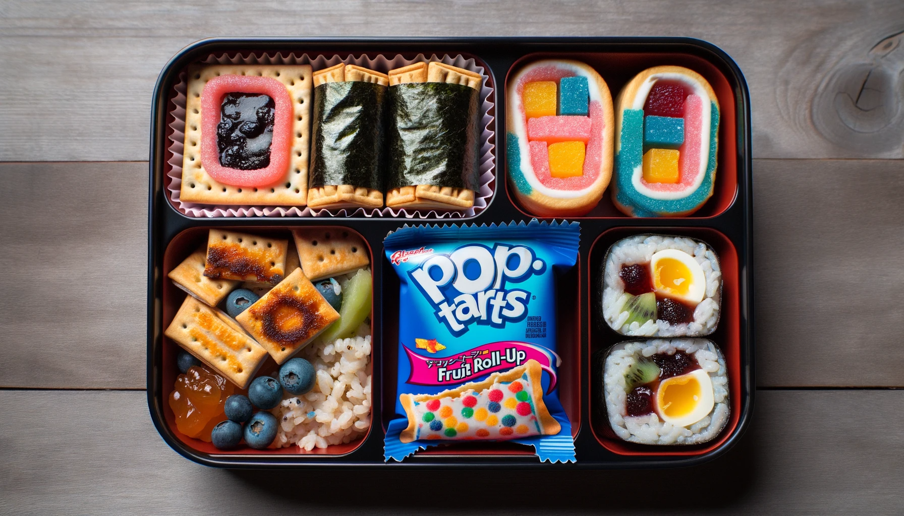
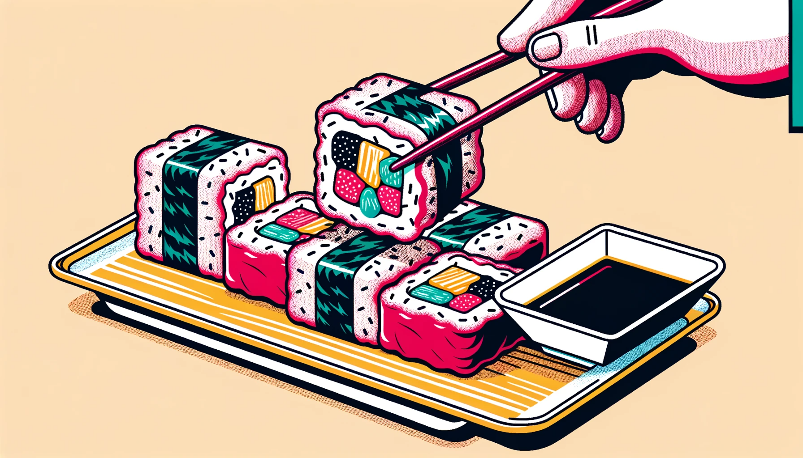
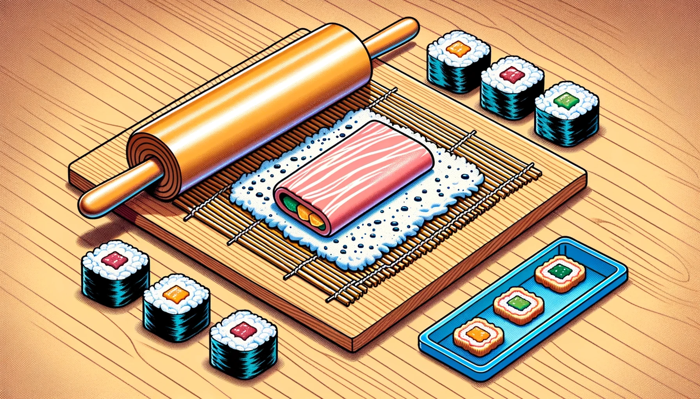
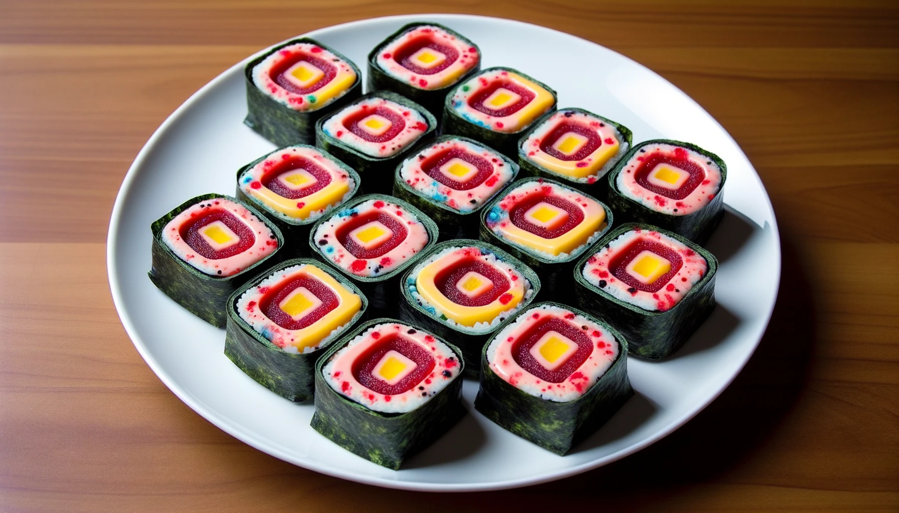

Pop-Tart Sushi Rolls with Fruit Roll-Up Nori!
What gives?
In a culinary landscape where sushi is all about fish and rice, and Pop-Tarts are just breakfast fodder, enter the maverick: Pop-Tart Sushi Rolls. Dreamed up in the fevered imagination of a snack lover, these rolls pay homage to the breakfast favorite but with an avant-garde twist. Instead of seaweed, your senses are greeted with the tangy embrace of Fruit Roll-Up nori. The center? The nostalgia-evoking Pop-Tart filling, of course. It's not just food; it's a gastronomic trip down memory lane, with a side of whimsy. A dish for those who dare to defy convention... or simply miss their childhood shenanigans. #SweetSushiSurprise! 🍣🍓🍭
See it for yourself:




Ingredients
- 3 different flavored Pop-Tarts
- 2 Fruit Roll-Ups
- Whipped cream (for garnish)
Instructions:
Pop-Tart Preparation:
- Toast the Pop-Tarts slightly just to warm them up.
- Cut each Pop-Tart into 4 long, thin strips.
Assembling the Sushi:
- Lay out a Fruit Roll-Up flat.
- Place a strip from each flavor of Pop-Tart onto the Fruit Roll-Up, slightly overlapping.
- Carefully roll the Fruit Roll-Up with the Pop-Tarts inside, pressing slightly to seal.
- Using a sharp knife, cut the roll into "sushi" pieces, each about an inch thick.
Serving:
- Arrange the Pop-Tart sushi rolls on a plate and garnish with a dollop of whipped cream on top of each piece.